| Homepage | Prezzi | Top 10 attrazioni | Contattami per e-mail |
Per contemplare una delle più alte espressioni dell'architettura balinese, con i suoi raffinati elementi stilistici
esotici, basta raggiungere il Palazzo di Ubud, l' antica residenza della famiglia reale. Adiacente ai due Templi
Puri Saren Agung e Pura Marajan Agung, stupisce visitatori da tutto il mondo.
Ad oggi il Puri Saren Ubud Palace, come è anche conosciuto, è un' importante sede culturale per quanto riguarda l' arte,
la danza balinese, la musica e la letteratura. Le sue sale interne e il palcoscenico per le esibizioni accolgono
infatti eventi internazionali, e il suo cortile dà il benvenuto al pubblico tra spettacoli serali di musica e danza.
Ottieni indicazioni
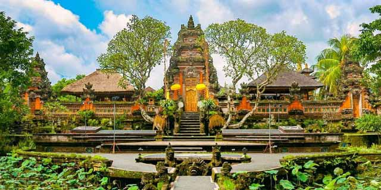
Situato a est di Bali e Lombok, il Parco Nazionale di Komodo è sicuramente l'attrazione più importante dell'Isola.
Percorrendo ed esplorando il parco è possibile ammirare esemplari unici al mondo, come gli spettacolari
draghi di Komodo, squali balena, pesci luna e mante giganti.
Essi sono protetti in quest'area patrimonio dell'UNESCO dal 1991 e Riserva della biosfera ,
per la conservazione e la protezione dell'ambiente all'interno del Programma sull'Uomo e la Biosfera (MAB).
Il Parco è anche meta prediletta per gli appassionati di snorkeling, di immersioni e di trekking su vette vulcaniche.
Nella riserva esistono anche più di 40 siti dove praticare diving.
Ottieni indicazioni
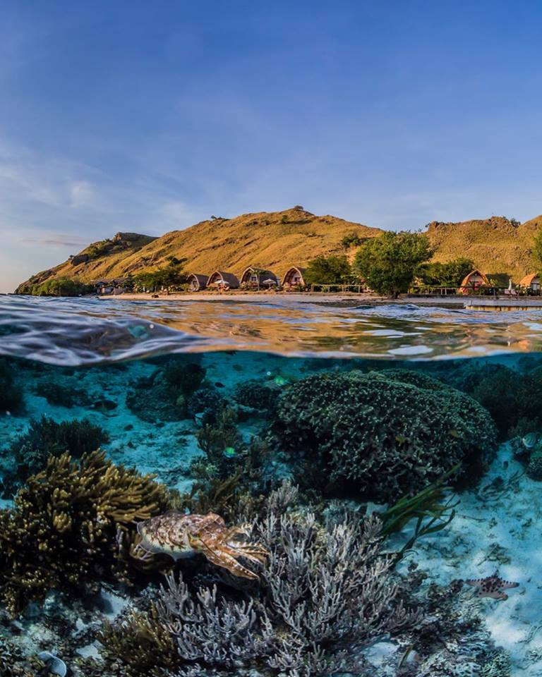
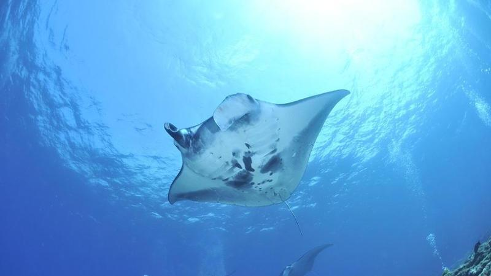
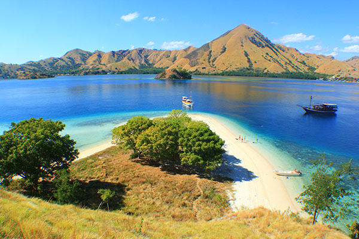
La salita al Monte Bromo è solo uno dei tanti spettacoli naturali che l'Indonesia ha da offrire.
Qui si concentrano le attività turistiche della zona, come la vista dell'alba , dove l'attrazione
principale è lo scorrere del tempo, con la luce che avanza e colora la caldera del Tengger, con i suoi
tre vulcani: il Bromo, il Batok e il Semeru.
Per godersi l'alba sul Bromo puoi scegliere tra due punti panoramici sul monte Gunung Penanjakan,
(situato di fronte al Bromo) e con un'altezza di oltre 2.700 metri .
Il punto più alto di osservazione si trova ovviamente sulla cima, ma è sempre molto affollato; in alternativa
c'è un altro punto poco più in basso: è molto più tranquillo ed offre comunque un ottimo
panorama, comodamente seduti lungo il fianco della montagna (cosa non permessa nel punto più alto).
Ottieni indicazioni
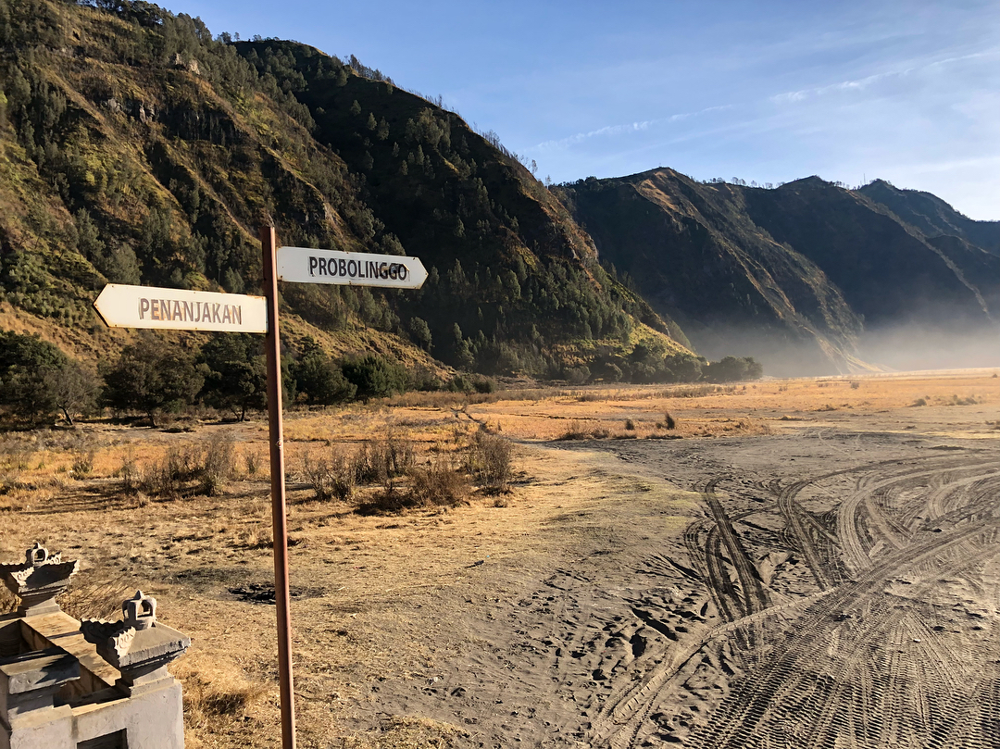
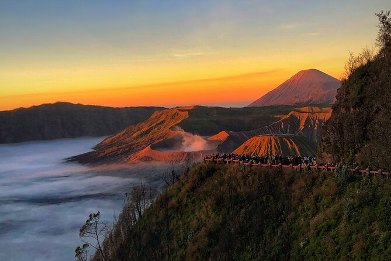
Il Love Bridge Taman Impian Jaya Ancol, detto anche "Love Bridge", si trova nel nord di Giacarta,
dove la città incontra il mare.
Questo ponte rappresenta una romantica e suggestiva passeggiata serale tra le luci della città
e il pacifico rumore del mare. Da non perdere se volete godere di qualche momento di tranquillità
lontani dal caos urbano.
Ottieni indicazioni
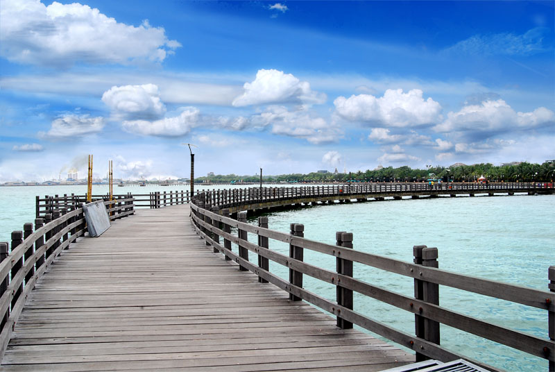
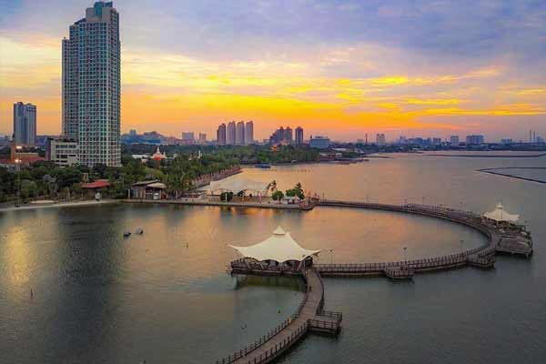
Il fascino marittimo di Raja Ampat è infinito, troverai sempre qualcosa di nuovo da esplorare;
ci sono inoltre molti punti che non sono stati esposti e uno di questi è Kali Biru ("fiume blu" , in indonesiano).
Come suggerisce il nome, l'acqua di questo fiume è limpida, come un cristallo blu.
Secondo il folklore, il fiume è conosciuto come il luogo balneare dell'isola Raja Waigeo.
Fino ad ora, Kalibiru ha un'unicità che è sempre limpida e blu e non sarà fangosa neanche se piove ad alta intensità.
Godersi l'atmosfera nella parte a monte di Kalibiru è molto rilassante: rinfresca e calma la mente.
Inoltre, i turisti possono fare un bagno o semplicemente lavarsi la faccia in questo fiume paradisiaco.
Ottieni indicazioni
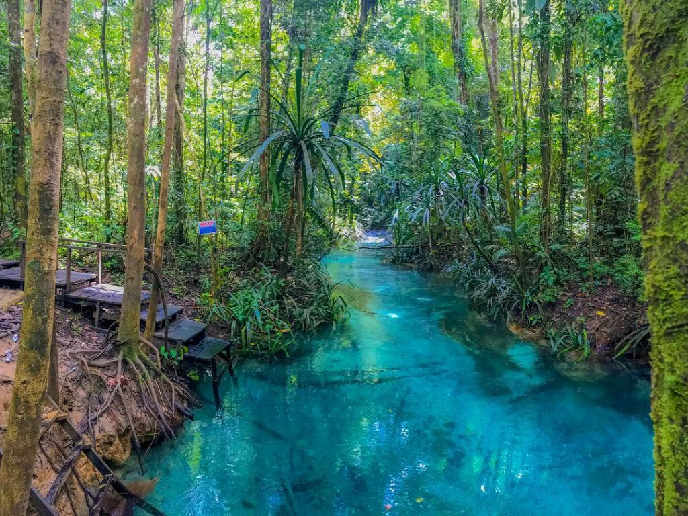
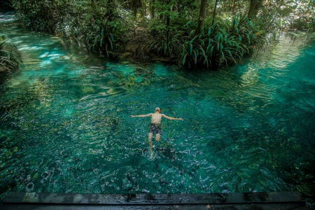
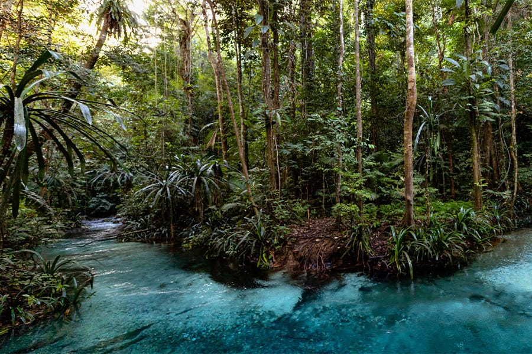
La "Tegalalang Rice Terrace", un'icona agricola sulle scogliere di un tradizionale villaggio balinese, è il luogo ideale
per trascorrere una mattinata o un pomeriggio assorbendo la pace naturale della vita remota dell'isola.
Questa splendida terrazza del riso di Tegalalang è patrimonio mondiale dell'UNESCO , e comprende inoltre campi a cascata
verde smeraldo lavorati da coltivatori di riso locali.
Appena fuori Ubud, è diventata una delle destinazioni più gettonate da tutti i viaggiatori, ed accoglie ogni anno
un gran numero di turisti da tutto il mondo.
Ottieni indicazioni
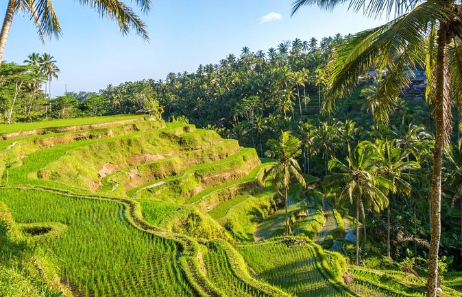
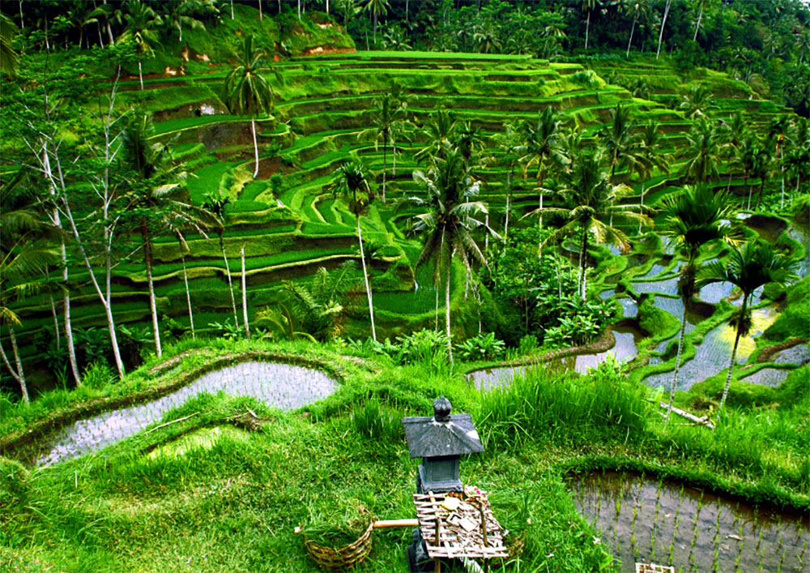
L'isola calcarea di Nusa Penida si trova a sud-est di Bali e si estende su una superficie di circa 200 chilometri quadrati.
È caratterizzata da una bellezza naturale incantevole, con chilometri e chilometri di costa, scogliere a picco che si tuffano nel mare
cristallino ed una vita marina tutta da esplorare. Non mancano inoltre bellissime spiagge, un entroterra ancora vergine e, in generale,
un'atmosfera ancora "incontaminata" da turisti.
Ottieni indicazioni
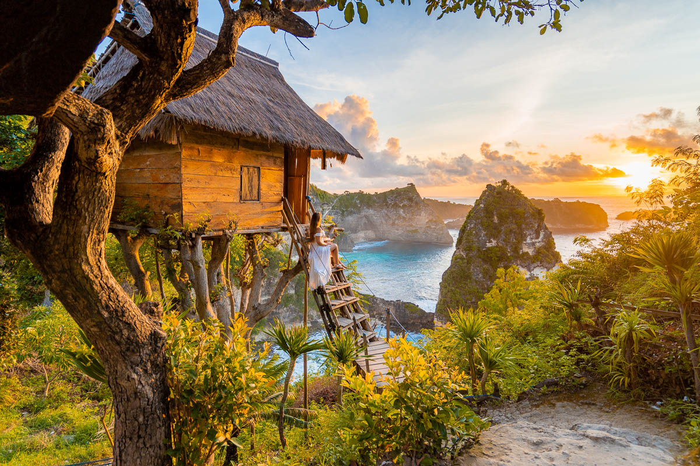
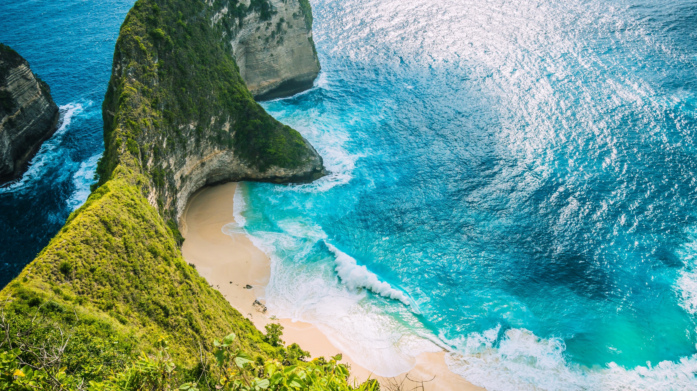
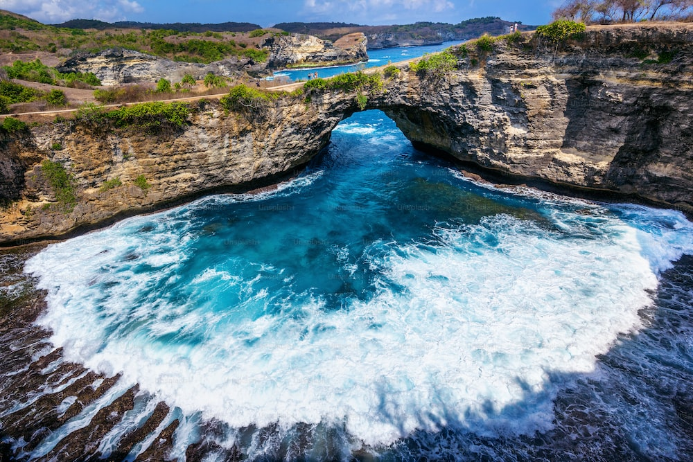
Le cascate Benang Kelambu e Benang Stokel si trovano nel villaggio di Aik Berik, nella parte centrale di Lombok (isola ad est di Bali).
Benang Kelambu offre un magnifico muro di viti e due splendide piscine naturali per nuotare e rilassarsi.
Benang Stokel è l'altra incredibile cascata situata a 15-20 minuti dalla precedente.
Anch'essa è dotata di una vista mozzafiato ed una piscina che essendo però poco profonda, impedisce di nuotarci. Tuttavia è possibile
rifrescarsi sotto l'acqua per godere di un'esperienza davvero unica!
Ottieni indicazioni
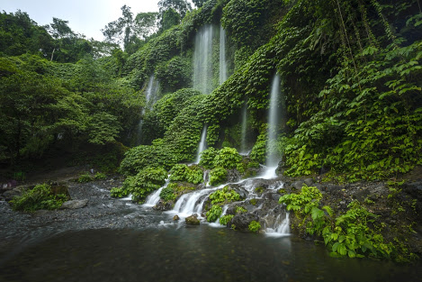
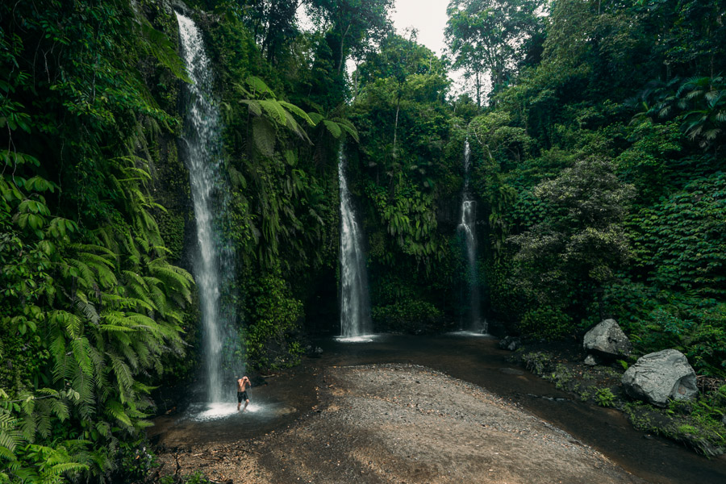
Il sentiero di entrata costeggia il fiume Oos in Sukawati a Gianyar, nella giungla tropicale.
Questo canyon è stato scolpito nel corso di migliaia di anni ed è considerato un luogo sacro dagli abitanti del luogo.
Uno dei particolari che colpisce maggiormente sono i colori delle rocce prodotti dal riflesso del sole unito alle cascate e al muschio.
Se stai cercando un'avventura diversa dalle più convenzionali, questo magico canyon fa al caso tuo!
Ottieni indicazioni
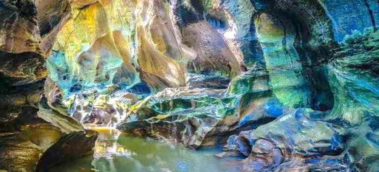
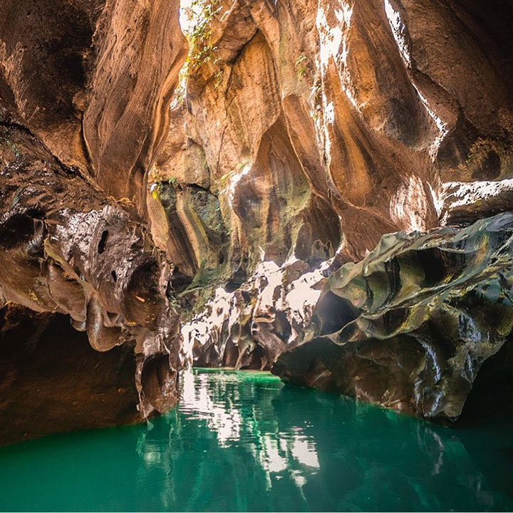
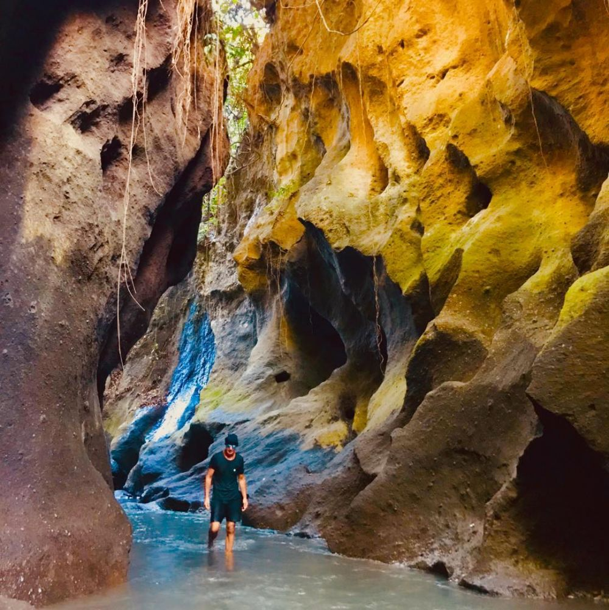
A nord dell'isola di Sumatra si trova il Parco Nazionale Gunung Leuser, che prende il nome dal monte Leuser , alto più di 3380 metri.
Questo parco, che si estende su una superficie di 9500 km2, ospita una flora e una fauna lussureggiante e rimane uno degli unici luoghi
sulla terra dove è ancora possibile osservare gli oranghi e le tigri di Sumatra allo stato brado.
Insieme ai parchi nazionali di Bukit Barisan e Kerinci Seblat, è riconosciuto come riserva della biosfera dall'UNESCO.
In questo parco è inoltre possibile effettuare trekking di uno o più giorni e vedere dunque da vicino le specie in via d'estinzione.
Ottieni indicazioni
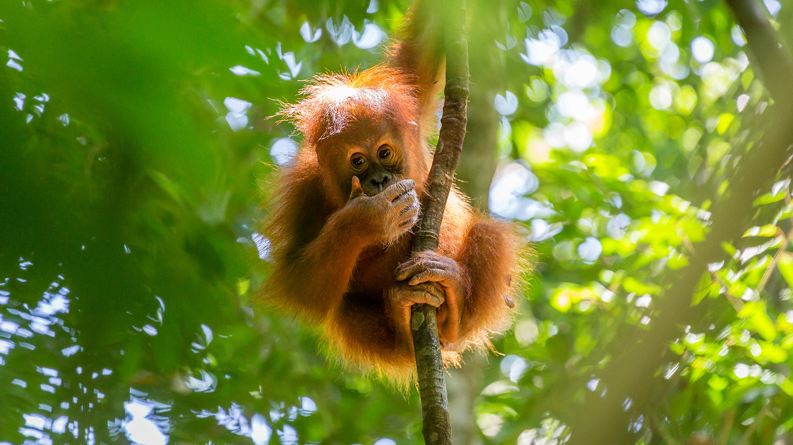
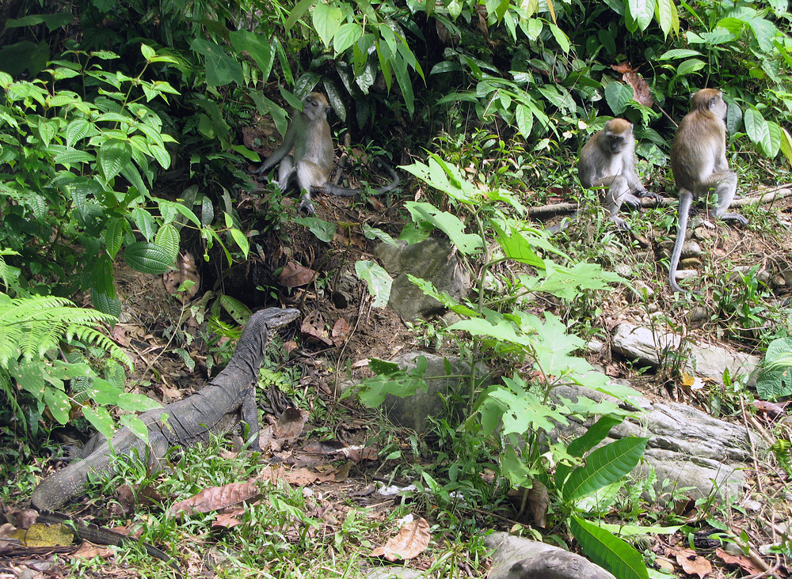
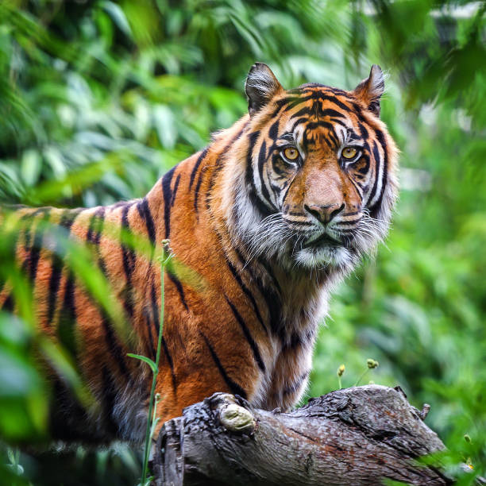